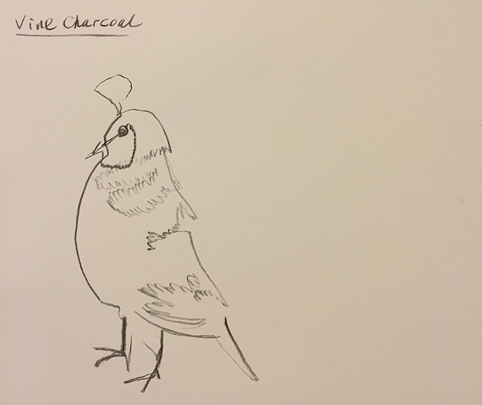

Personal
I love music of many kinds, I started playing the piano 2 years ago and recently learned how to play the guitar...
I also like drawing. This blind drawing, which is a drawing that you only look at the object, not the paper. I think it's like meditaion...
Food is so tempting in my life...
In my leisure time, I also like to watch the sunset.